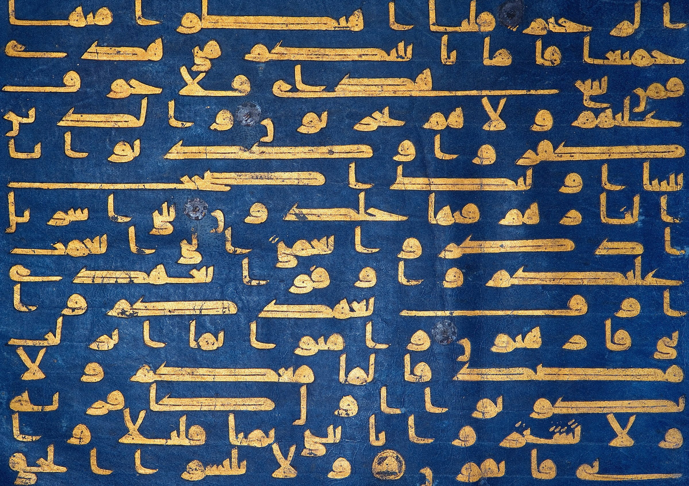

Copied from sources you can check.
- Quranic Arabic CorpusWord data and roots
- TanzilThe Quran text
- al-AjurrumiyyahClassical grammar
- Madinah booksTextbook
From learners
Students, self-learners and teachers, on what changed when they started reading the Quran word by word.

Blue Qur'an pageNorth Africa or Southern Spain, 9th–10th century. Public domain.
The word-by-word surah breakdowns are incredible. I finally understand why each word has the ending it does.
This site completely changed how I approach the Quran. I can now understand the grammatical structure behind every ayah I read.
I've tried many Arabic courses, but this is the first one that ties everything back to the Quran. The progression from basics to full verse analysis is perfect.
How it is run
A religious text deserves care. Here is where the facts come from, what it costs, and what happens when we get something wrong.

Folio from a KoranAbbasid, 8th–9th century. Public domain.
Every page has a way to report a mistake, and we fix it.
Send feedback